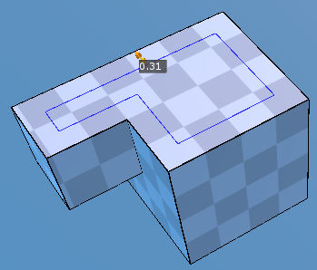
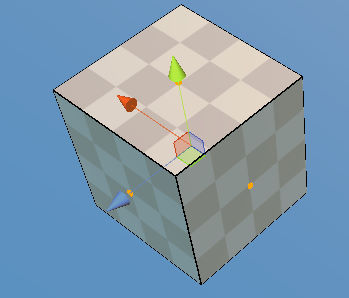
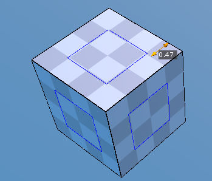
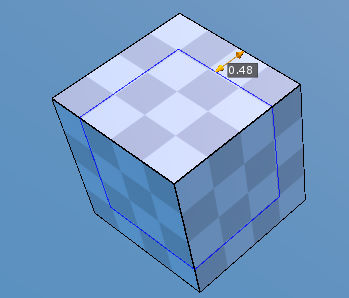

Inset Tool ¶
{kind=link}
This tool creates a slightly smaller or bigger polygon of the selected one.
Move the cursor over a desired polygon and start to drag a mouse. Then you’ll see that the polygon outline will be bigger or smaller. Release LMB to be done. Try to change the properties in the inspector if necessary. And press SPACE to confirm.
- Multiple Inset
- If several polygons are already selected when
Inset Toolis activated,Insetwill be applied to them at once. - Repeat the previous
SHIFT + LMBon a desired polygon repeats the previous inset.
Steps - Single Inset¶
- Select
Inset Toolwith no selection. - Click on a polygon you want to apply Inset to.
- Drag the cursor to define thickness.
- Release
LMB - Adjust
Thicknessproperties if necessary - Press
SPACEor start another inset action to confirm.
Steps - Multiple Inset¶
- Select
Inset Toolwith some polygons selected usingPolygon Tool. - Start to drag the mouse from a polygon or adjust
Thicknessproperty directly. - If necessary, adjust
Thicknessproperty inPropertiesto give the precise value. - Press
SPACEto complete or PressESCto cancel.
Interface¶
LMB Drag- Creates an inset of the selected polygon.
SHIFT + LMB- Duplicates the previous inset.
SPACE- Confirms the current inset.
ESC- Cancels the current inset or exit Inset tool.
Properties¶
- Thickness
- How smaller or bigger the polygon is. This is the distance between the starting point and the current point.
- Type (for
Multiple Inset) Individual- Each selected face is inset on its own.Group-Inset Tooloperates on the region around selected faces
- Bridge Edges
- Links corresponding edges between the original polygon and the inset polygon.

{kind=link}
Single Inset.

{kind=link}
Multi Inset - Three polygons are selected.

{kind=link}
Multi Inset - as Type property is Individual

{kind=link}
Multi Inset - as Type property is Group